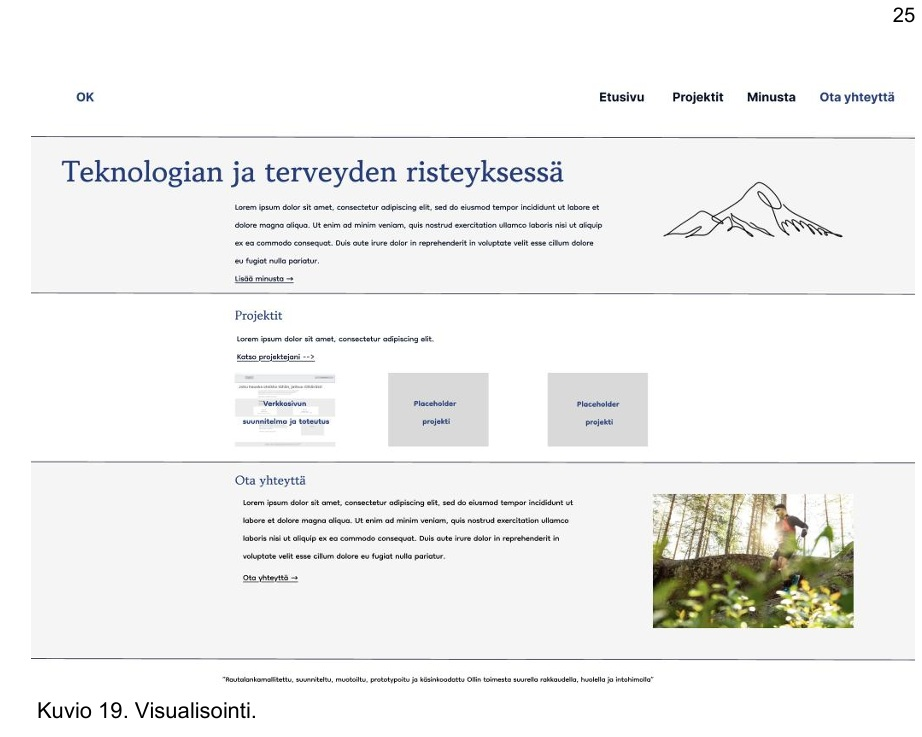
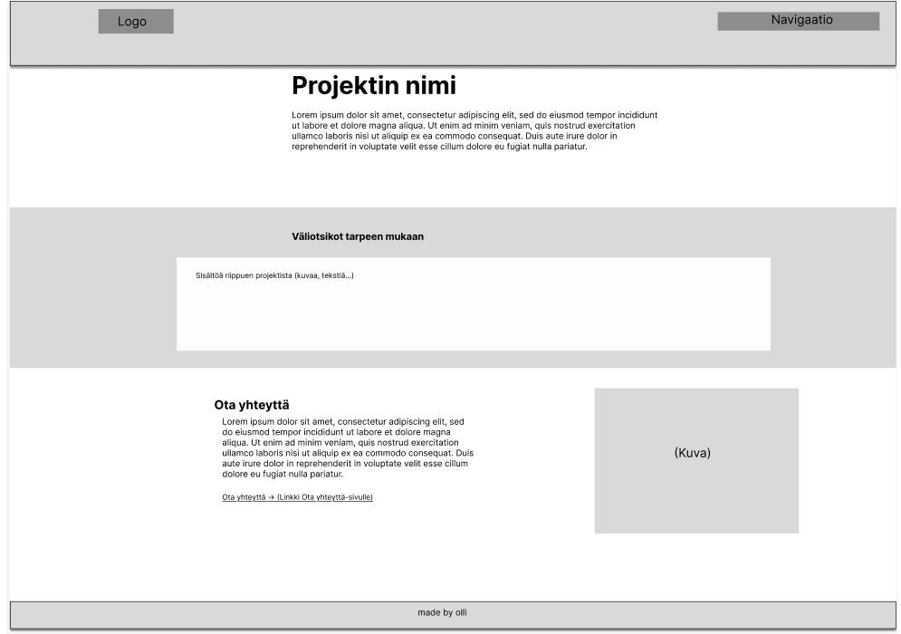

Projektit
Olen työskennellyt sote-kentällä digitaalisten palveluiden parissa viitisen vuotta ja tällä hetkellä opiskelen tietojenkäsittelyn tradenomiksi. Alla on valikoima erilaisia projekteja, joihin olen osallistunut ja oppeja niistä.
Verkkosivun suunnitelma
Oppeja verkkosivun suunnittelusta. Lue lisää →
Placeholder Projekti
Oppeja verkkosivun suunnittelusta. Lue lisää →
Ota yhteyttä
Olen kiinnostunut kaikenlaisesta ja kuulen mielelläni mitä ikinä sinulla onkaan sanottavana. Ota yhteyttä →